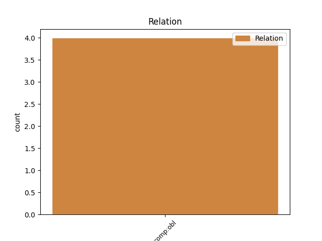
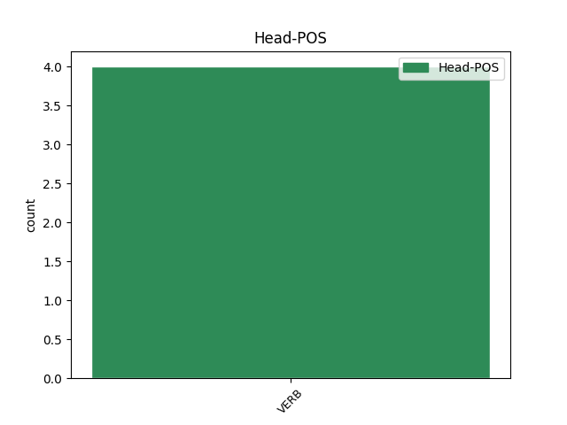
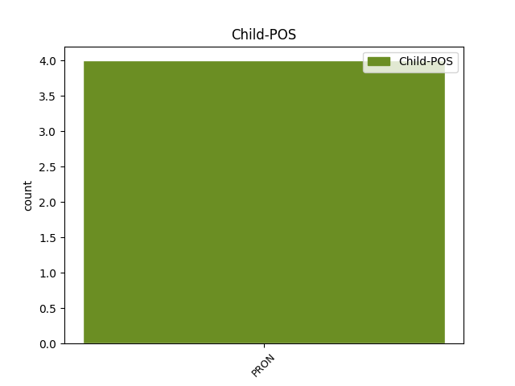

Distribution of features within this leaf



No agree examples found.
Disagree Examples:
1 Pontifex _ _ _ _ 0 _ _ _
2 maximus _ _ _ _ 0 _ _ _
3 ne _ _ _ _ 0 _ _ _
4 fierem _ _ _ _ 0 _ _ _
5 in _ _ _ _ 0 _ _ _
6 vivi _ _ _ _ 0 _ _ _
7 conlegae _ _ _ _ 0 _ _ _
8 mei _ _ _ _ 0 _ _ _
9 locum _ _ _ _ 0 _ _ _
10 , _ _ _ _ 0 _ _ _
11 populo _ _ _ _ 0 _ _ _
12 id _ _ _ _ 0 _ _ _
13 sacerdotium _ _ _ _ 0 _ _ _
14 deferente defero VERB v-spp-mb- Case=Abl|Gender=Masc|Number=Sing|Tense=Pres|VerbForm=Part 0 _ _ _
15 mihi ego PRON p-s---md- Case=Dat|Gender=Masc|Number=Sing 14 comp:obl _ _
16 quod _ _ _ _ 0 _ _ _
17 pater _ _ _ _ 0 _ _ _
18 meus _ _ _ _ 0 _ _ _
19 habuerat _ _ _ _ 0 _ _ _
20 , _ _ _ _ 0 _ _ _
21 recusavi _ _ _ _ 0 _ _ _
22 . _ _ _ _ 0 _ _ _
1 sed _ _ _ _ 0 _ _ _
2 aduersante _ _ _ _ 0 _ _ _
3 conatibus _ _ _ _ 0 _ _ _
4 suis _ _ _ _ 0 _ _ _
5 M. _ _ _ _ 0 _ _ _
6 Antonio _ _ _ _ 0 _ _ _
7 consule _ _ _ _ 0 _ _ _
8 , _ _ _ _ 0 _ _ _
9 quem _ _ _ _ 0 _ _ _
10 uel _ _ _ _ 0 _ _ _
11 praecipuum _ _ _ _ 0 _ _ _
12 adiutorem _ _ _ _ 0 _ _ _
13 sperauerat _ _ _ _ 0 _ _ _
14 , _ _ _ _ 0 _ _ _
15 ac _ _ _ _ 0 _ _ _
16 ne _ _ _ _ 0 _ _ _
17 publicum _ _ _ _ 0 _ _ _
18 quidem _ _ _ _ 0 _ _ _
19 et _ _ _ _ 0 _ _ _
20 translatiuum _ _ _ _ 0 _ _ _
21 ius _ _ _ _ 0 _ _ _
22 ulla _ _ _ _ 0 _ _ _
23 in _ _ _ _ 0 _ _ _
24 re _ _ _ _ 0 _ _ _
25 sibi sui PRON p-s---md- Case=Dat|Gender=Masc|Number=Sing 30 comp:obl _ _
26 sine _ _ _ _ 0 _ _ _
27 pactione _ _ _ _ 0 _ _ _
28 grauissimae _ _ _ _ 0 _ _ _
29 mercedis _ _ _ _ 0 _ _ _
30 impertiente impertio VERB v-sppamb- Case=Abl|Gender=Masc|Number=Sing|Tense=Pres|VerbForm=Part|Voice=Act 0 _ _ _
31 , _ _ _ _ 0 _ _ _
32 ad _ _ _ _ 0 _ _ _
33 optimates _ _ _ _ 0 _ _ _
34 se _ _ _ _ 0 _ _ _
35 contulit _ _ _ _ 0 _ _ _
36 , _ _ _ _ 0 _ _ _
37 quibus _ _ _ _ 0 _ _ _
38 eum _ _ _ _ 0 _ _ _
39 inuisum _ _ _ _ 0 _ _ _
40 sentiebat _ _ _ _ 0 _ _ _
41 , _ _ _ _ 0 _ _ _
42 maxime _ _ _ _ 0 _ _ _
43 quod _ _ _ _ 0 _ _ _
44 D. _ _ _ _ 0 _ _ _
45 Brutum _ _ _ _ 0 _ _ _
46 obsessum _ _ _ _ 0 _ _ _
47 Mutinae _ _ _ _ 0 _ _ _
48 prouincia _ _ _ _ 0 _ _ _
49 a _ _ _ _ 0 _ _ _
50 Caesare _ _ _ _ 0 _ _ _
51 data _ _ _ _ 0 _ _ _
52 et _ _ _ _ 0 _ _ _
53 per _ _ _ _ 0 _ _ _
54 senatum _ _ _ _ 0 _ _ _
55 confirmata _ _ _ _ 0 _ _ _
56 expellere _ _ _ _ 0 _ _ _
57 armis _ _ _ _ 0 _ _ _
58 niteretur _ _ _ _ 0 _ _ _
59 . _ _ _ _ 0 _ _ _
1 delatum defero VERB v-srppna- Aspect=Perf|Case=Acc|Gender=Neut|Number=Sing|Tense=Past|VerbForm=Part|Voice=Pass 0 _ _ _
2 ei is PRON p-s---md- Case=Dat|Gender=Masc|Number=Sing 1 comp:obl _ _
3 a _ _ _ _ 0 _ _ _
4 milite _ _ _ _ 0 _ _ _
5 imperium _ _ _ _ 0 _ _ _
6 conveniebat _ _ _ _ 0 _ _ _
7 . _ _ _ _ 0 _ _ _
1 ipsum _ _ _ _ 0 _ _ _
2 Crassum _ _ _ _ 0 _ _ _
3 ego _ _ _ _ 0 _ _ _
4 postea _ _ _ _ 0 _ _ _
5 praedicantem _ _ _ _ 0 _ _ _
6 audivi _ _ _ _ 0 _ _ _
7 tantam _ _ _ _ 0 _ _ _
8 illam _ _ _ _ 0 _ _ _
9 contumeliam _ _ _ _ 0 _ _ _
10 sibi sui PRON p-s---md- Case=Dat|Gender=Masc|Number=Sing 13 comp:obl _ LId=sui1
11 ab _ _ _ _ 0 _ _ _
12 Cicerone _ _ _ _ 0 _ _ _
13 inpositam inpono VERB v-srppfa- Aspect=Perf|Case=Acc|Gender=Fem|Number=Sing|Tense=Past|VerbForm=Part|Voice=Pass 0 _ _ _
14 . _ _ _ _ 0 _ _ _